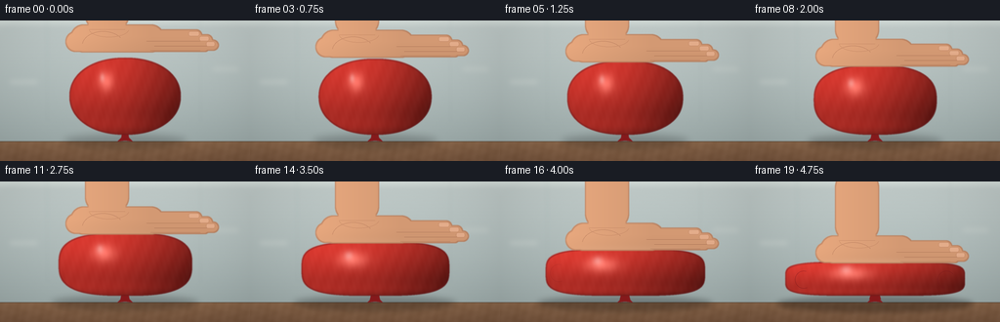
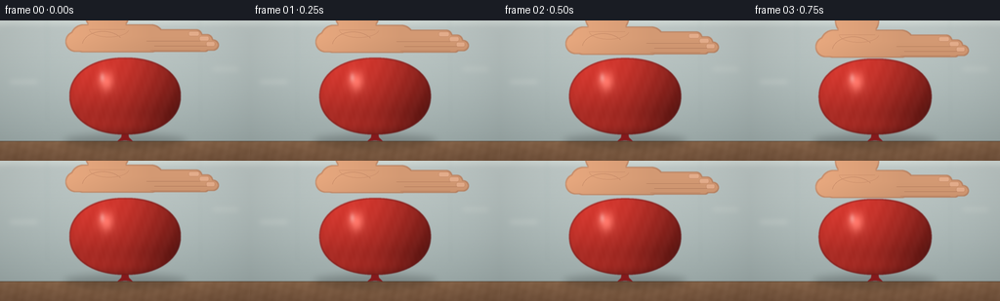
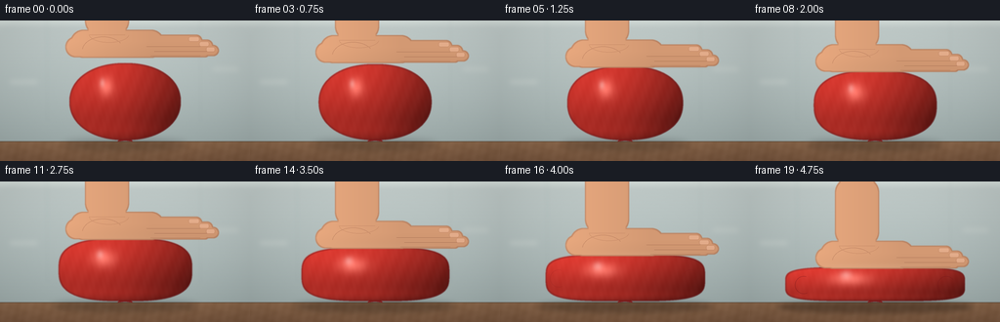
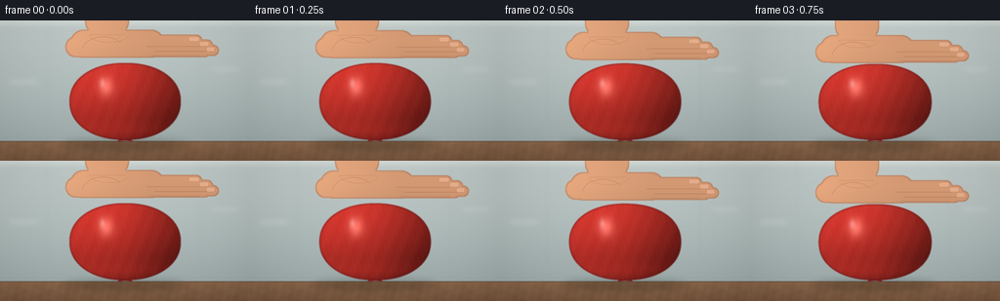

CODING AGENTS AS PIXEL WORLD MODELS
traex/GPT-5.6-Sol · phygen_013
点击播放 · 原生 RGB 像素
逐轮保存的候选
回放视频、检查图与代码变化。
每份候选均可单独播放。实际图片检查记录在下方工具轨迹中。
候选 01播放与检查图
点击播放 · 原生 RGB 像素


展开代码变化
--- 上一保存版本
+++ 本次保存版本
@@ -0,0 +1,243 @@
+from pathlib import Path
+import math
+import numpy as np
+from PIL import Image, ImageDraw, ImageFilter
+import artifact_io
+
+# Deterministic procedural rendering: a fixed side-view studio shot of a latex
+# balloon undergoing accelerating compression by a human hand.
+W, H, N = 256, 144, 20
+S = 4
+w, h = W*S, H*S
+rng = np.random.default_rng(13013)
+
+Y, X = np.mgrid[0:h, 0:w]
+xf, yf = X / S, Y / S
+
+
+def rounded(draw, box, radius, fill):
+ draw.rounded_rectangle(tuple(int(v*S) for v in box), radius=int(radius*S), fill=fill)
+
+
+def composite_rgb(base, rgb, mask):
+ """Alpha-composite an RGB ndarray through an L mask."""
+ a = np.asarray(mask, dtype=np.float32)[..., None] / 255.0
+ return base * (1.0-a) + rgb * a
+
+
+def static_background():
+ # Warm, restrained studio/kitchen background. Gradients and mild depth cues
+ # retain realism while leaving the action very legible at 256x144.
+ yy = yf / H
+ wall_top = np.array([196., 206., 204.])
+ wall_bot = np.array([153., 167., 166.])
+ arr = wall_top[None,None,:] * (1-yy[...,None]) + wall_bot[None,None,:] * yy[...,None]
+
+ bg = Image.fromarray(np.uint8(np.clip(arr, 0, 255)), 'RGB')
+ d = ImageDraw.Draw(bg, 'RGBA')
+ # softly defocused wall panels / backsplash seams
+ d.rectangle((0, 0, w, 4*S), fill=(232,238,233,120))
+ d.line((48*S, 0, 48*S, 104*S), fill=(112,132,133,30), width=S)
+ d.line((205*S, 0, 205*S, 104*S), fill=(112,132,133,26), width=S)
+ d.rectangle((10*S, 61*S, 38*S, 65*S), fill=(235,239,232,55))
+ d.rectangle((218*S, 48*S, 244*S, 52*S), fill=(235,239,232,45))
+ bg = bg.filter(ImageFilter.GaussianBlur(2.4*S))
+ arr = np.asarray(bg, dtype=np.float32)
+
+ # Wooden worktop begins at y=124.
+ table = np.zeros_like(arr)
+ ty = np.clip((yf-124)/20, 0, 1)
+ table[...,0] = 137 - 19*ty
+ table[...,1] = 103 - 17*ty
+ table[...,2] = 76 - 13*ty
+ grain = (2.0*np.sin(xf*.25 + np.sin(yf*.55)) + 1.4*np.sin(xf*.72+yf*.18))
+ table += grain[...,None]
+ m = (yf >= 124)[...,None]
+ arr = np.where(m, table, arr)
+ # crisp front edge / contact plane
+ arr[(yf>=123.3)&(yf<124.3)] *= np.array([.78,.75,.72])
+ # subtle vignette
+ dist = ((xf-128)/150)**2 + ((yf-71)/105)**2
+ arr *= (1 - .09*np.clip(dist,0,1))[...,None]
+ noise = rng.normal(0, .6, (h,w,1))
+ return np.clip(arr+noise, 0,255)
+
+BG = static_background()
+
+
+def balloon_layer(base, p):
+ # Volume-preserving-looking deformation: the body gets dramatically wider
+ # as the hand drives the top toward the fixed work surface.
+ body_bottom = 117.0
+ body_h = 79.0 - 44.0*p
+ rx = 57.0 + 35.0*p
+ cx = 128.0 + .35*math.sin(p*math.pi)
+ cy = body_bottom - body_h/2
+ hy = body_h/2
+ exponent = 2.15 + 2.35*p
+
+ # Contact deformation is flat at the top at high pressure; changing the
+ # superellipse exponent makes the sides bulge rather than merely scaling.
+ u = (xf-cx)/rx
+ v = (yf-cy)/hy
+ q = np.abs(u)**exponent + np.abs(v)**exponent
+ inside = q <= 1.0
+ mask_arr = np.uint8(inside)*255
+ mask = Image.fromarray(mask_arr, 'L').filter(ImageFilter.GaussianBlur(.45*S))
+
+ # Ground shadow spreads and darkens under compression.
+ shadow = Image.new('L',(w,h),0)
+ sd = ImageDraw.Draw(shadow)
+ spread = 63 + 38*p
+ sd.ellipse(((128-spread)*S, (116.5)*S, (128+spread)*S, (131+3*p)*S), fill=int(105+48*p))
+ shadow = shadow.filter(ImageFilter.GaussianBlur((3.8-1.2*p)*S))
+ sh_a = np.asarray(shadow,dtype=np.float32)[...,None]/255
+ base = base*(1-.48*sh_a)
+
+ # Neck and tied knot remain beneath the body and visibly identify a balloon.
+ knot = Image.new('L',(w,h),0)
+ kd = ImageDraw.Draw(knot)
+ neck_w = 6.0 + 2.0*p
+ kd.polygon([
+ ((128-neck_w/2)*S,114*S), ((128+neck_w/2)*S,114*S),
+ ((132+2*p)*S,121*S), ((128)*S,120*S), ((124-2*p)*S,121*S)
+ ], fill=255)
+ kd.polygon([(124*S,120*S),(132*S,120*S),(136*S,124*S),(128*S,123*S),(120*S,124*S)], fill=255)
+ knot = knot.filter(ImageFilter.GaussianBlur(.28*S))
+ knot_rgb = np.empty_like(base)
+ knot_rgb[...] = [133,29,31]
+ base = composite_rgb(base,knot_rgb,knot)
+
+ # Taut latex material: directional shading, edge falloff, reflected table,
+ # and a broad specular highlight that stretches as the balloon flattens.
+ light = .70 + .23*(-u*.55-v*.82)
+ edge = np.clip(1-q,0,1)
+ light += .09*np.sqrt(edge)
+ light -= .13*np.clip(u,0,1)
+ # warm reflected light along lower edge
+ light += .08*np.exp(-((v-.78)/.24)**2)
+ red = np.zeros_like(base)
+ red[...,0] = 220*light
+ red[...,1] = 61*light
+ red[...,2] = 52*light
+ # Fine rubber texture, stable in object space.
+ texture = 1.5*np.sin(xf*.47+yf*.19) + .8*np.sin(xf*1.21-yf*.31)
+ red += texture[...,None]
+ # Main soft highlight, increasingly horizontal as the skin stretches.
+ hx = cx-rx*(.34-.06*p)
+ hyc = cy-hy*(.38-.08*p)
+ spec = np.exp(-(((xf-hx)/(10+16*p))**2 + ((yf-hyc)/(13-4*p))**2)*1.7)
+ red = red*(1-.18*spec[...,None]) + np.array([255,207,190])[None,None,:]*(.35*spec[...,None])
+ # secondary tiny high-gloss glint
+ glint = np.exp(-(((xf-(hx-4))/(4.0+5*p))**2 + ((yf-(hyc-4))/7.0)**2)*2.2)
+ red = red*(1-.28*glint[...,None]) + 255*(.28*glint[...,None])
+ base = composite_rgb(base, np.clip(red,0,255), mask)
+
+ # Dark red contour communicates rubber thickness and changing silhouette.
+ eroded = mask.filter(ImageFilter.MinFilter(2*S+1))
+ contour = np.maximum(np.asarray(mask,dtype=np.int16)-np.asarray(eroded,dtype=np.int16),0).astype(np.uint8)
+ contour = Image.fromarray(np.uint8(contour*.43),'L')
+ edge_rgb = np.empty_like(base); edge_rgb[...] = [101,24,28]
+ base = composite_rgb(base,edge_rgb,contour)
+
+ # Under-palm contact line and lateral strain folds appear only once pressure
+ # becomes substantial, serving as strong visual pressure cues.
+ top = body_bottom-body_h
+ details = Image.new('RGBA',(w,h),(0,0,0,0)); dd=ImageDraw.Draw(details,'RGBA')
+ if p > .10:
+ a = int(35+90*p)
+ contact_half = 28+29*p
+ dd.line(((128-contact_half)*S,(top+.8)*S,(128+contact_half)*S,(top+.8)*S),
+ fill=(84,17,25,a),width=max(1,int(.7*S)))
+ if p > .55:
+ aa=int(115*(p-.55)/.45)
+ for side in (-1,1):
+ x0=128+side*(55+18*p)
+ dd.arc(((x0-9)*S,(cy-8)*S,(x0+9)*S,(cy+10)*S),
+ 68 if side<0 else 102, 286 if side<0 else 320,
+ fill=(112,25,30,aa),width=max(1,int(.55*S)))
+ detail_arr=np.asarray(details,dtype=np.float32)
+ da=detail_arr[...,3:4]/255
+ base=base*(1-da)+detail_arr[...,:3]*da
+ return base, top
+
+
+def hand_layer(base, palm_y, p):
+ # Hand is assembled as one anti-aliased mask from anatomical primitives.
+ # It enters from above, with the lowest finger/palm surface kept horizontal.
+ mask = Image.new('L',(w,h),0); md=ImageDraw.Draw(mask)
+ y=palm_y
+ # vertical wrist / forearm
+ rounded(md, (87, y-92, 132, y-21), 15, 255)
+ # heel and palm
+ rounded(md, (72, y-27, 168, y+1.6), 13, 255)
+ # thumb pad curled at left
+ rounded(md, (67, y-20, 99, y+1), 10, 255)
+ # Four stacked fingers pointing right; the lowest index makes contact.
+ rounded(md, (126, y-22, 207, y-10), 6, 255)
+ rounded(md, (134, y-17, 218, y-5), 6, 255)
+ rounded(md, (140, y-11.5, 224, y-.2), 5.5, 255)
+ rounded(md, (135, y-6.5, 214, y+1.2), 4, 255)
+ mask=mask.filter(ImageFilter.GaussianBlur(.35*S))
+
+ # skin illumination and warm subsurface hue
+ skin=np.zeros_like(base)
+ grad = .92 + .11*np.clip((110-xf)/115,-.4,1) - .08*np.clip((yf-y+15)/42,0,1)
+ skin[...,0]=238*grad; skin[...,1]=174*grad; skin[...,2]=132*grad
+ # Palm pressure makes contact region slightly paler.
+ pale=np.exp(-((yf-y)/3.8)**2)*np.exp(-((xf-130)/59)**4)*p
+ skin=skin*(1-.11*pale[...,None])+np.array([255,215,183])*(.11*pale[...,None])
+ base=composite_rgb(base,np.clip(skin,0,255),mask)
+
+ # outline and anatomical creases/nails
+ eroded=mask.filter(ImageFilter.MinFilter(2*S+1))
+ outline=np.maximum(np.asarray(mask,dtype=np.int16)-np.asarray(eroded,dtype=np.int16),0).astype(np.uint8)
+ outline=Image.fromarray(np.uint8(outline*.30),'L')
+ dark=np.empty_like(base); dark[...] = [118,70,52]
+ base=composite_rgb(base,dark,outline)
+
+ det=Image.new('RGBA',(w,h),(0,0,0,0)); d=ImageDraw.Draw(det,'RGBA')
+ lw=max(1,int(.55*S))
+ # finger separations follow their overlapping lower edges
+ d.line((150*S,(y-10)*S,205*S,(y-10)*S),fill=(128,77,58,85),width=lw)
+ d.line((158*S,(y-5)*S,214*S,(y-5)*S),fill=(128,77,58,92),width=lw)
+ d.line((154*S,(y-.5)*S,205*S,(y-.5)*S),fill=(128,77,58,62),width=lw)
+ # palm creases and wrist bands
+ d.arc((84*S,(y-20)*S,127*S,(y+9)*S),188,326,fill=(133,79,59,78),width=lw)
+ d.arc((91*S,(y-31)*S,132*S,(y-14)*S),8,172,fill=(145,87,65,58),width=lw)
+ d.line((91*S,(y-22)*S,128*S,(y-22)*S),fill=(139,82,62,55),width=lw)
+ # subtle nails on upper three fingertips
+ for xx,yy0,ww in [(193,y-20,11),(204,y-15,10),(211,y-9.5,9)]:
+ d.rounded_rectangle((int(xx*S),int(yy0*S),int((xx+ww)*S),int((yy0+5)*S)),
+ radius=int(2.2*S),fill=(250,202,176,95),outline=(158,100,79,60),width=lw)
+ da=np.asarray(det,dtype=np.float32)
+ a=da[...,3:4]/255
+ base=base*(1-a)+da[...,:3]*a
+ return base
+
+
+def render_frame(i):
+ t=i/(N-1)
+ # Strong ease-in: compression accelerates rapidly late in the timelapse.
+ p=t**2.05
+ base=BG.copy()
+ base, balloon_top=balloon_layer(base,p)
+ # 7 px initial air gap closes quickly; thereafter palm tracks deformation.
+ if p < .035:
+ palm_y=balloon_top-(7*(1-p/.035))
+ else:
+ palm_y=balloon_top+.35
+ base=hand_layer(base,palm_y,p)
+
+ # Gentle camera-grade contrast and slight warm tone, then high-quality downsample.
+ base=np.clip((base-128)*1.035+128,0,255).astype(np.uint8)
+ im=Image.fromarray(base,'RGB').resize((W,H),Image.Resampling.LANCZOS)
+ return np.asarray(im,dtype=np.uint8)
+
+
+def main():
+ frames=np.stack([render_frame(i) for i in range(N)],axis=0)
+ artifact_io.save(frames,Path(__file__).resolve().parent)
+
+if __name__=='__main__':
+ main()
候选 02播放与检查图
点击播放 · 原生 RGB 像素


展开代码变化
--- 上一保存版本
+++ 本次保存版本
@@ -68,7 +68,9 @@
def balloon_layer(base, p):
# Volume-preserving-looking deformation: the body gets dramatically wider
# as the hand drives the top toward the fixed work surface.
- body_bottom = 117.0
+ # The envelope itself rests on the worktop (rather than appearing to float
+ # on its knot), with a tiny allowance for the dark contact shadow.
+ body_bottom = 122.5
body_h = 79.0 - 44.0*p
rx = 57.0 + 35.0*p
cx = 128.0 + .35*math.sin(p*math.pi)
@@ -89,7 +91,7 @@
shadow = Image.new('L',(w,h),0)
sd = ImageDraw.Draw(shadow)
spread = 63 + 38*p
- sd.ellipse(((128-spread)*S, (116.5)*S, (128+spread)*S, (131+3*p)*S), fill=int(105+48*p))
+ sd.ellipse(((128-spread)*S, (121.5)*S, (128+spread)*S, (133+2*p)*S), fill=int(105+48*p))
shadow = shadow.filter(ImageFilter.GaussianBlur((3.8-1.2*p)*S))
sh_a = np.asarray(shadow,dtype=np.float32)[...,None]/255
base = base*(1-.48*sh_a)
可观测工具轨迹
实际执行的命令与返回图片。
命令 1exit 0
/bin/bash -lc "cat prompt.txt && printf '\\n---RULES---\\n' && cat GENERATION_RULES.md && printf '\\n---SPEC---\\n' && cat task_spec.json"
命令 2exit 0
/bin/bash -lc "find . -maxdepth 2 -type f -printf '%p %s bytes\\n' | sort && printf '\\nTOOLS\\n' && command -v ffmpeg && command -v python3 && command -v blender || true"
命令 3exit 0
/bin/bash -lc "sed -n '1,240p' artifact_io.py"
命令 4exit 0
/bin/bash -lc "cat > generate.py <<'PY'
from pathlib import Path
import math
import numpy as np
from PIL import Image, ImageDraw, ImageFilter
import artifact_io
# Deterministic procedural rendering: a fixed side-view studio shot of a latex
# balloon undergoing accelerating compression by a human hand.
W, H, N = 256, 144, 20
S = 4
w, h = W*S, H*S
rng = np.random.default_rng(13013)
Y, X = np.mgrid[0:h, 0:w]
xf, yf = X / S, Y / S
def rounded(draw, box, radius, fill):
draw.rounded_rectangle(tuple(int(v*S) for v in box), radius=int(radius*S), fill=fill)
def composite_rgb(base, rgb, mask):
\"\"\"Alpha-composite an RGB ndarray through an L mask.\"\"\"
a = np.asarray(mask, dtype=np.float32)[..., None] / 255.0
return base * (1.0-a) + rgb * a
def static_background():
# Warm, restrained studio/kitchen background. Gradients and mild depth cues
# retain realism while leaving the action very legible at 256x144.
yy = yf / H
wall_top = np.array([196., 206., 204.])
wall_bot = np.array([153., 167., 166.])
arr = wall_top[None,None,:] * (1-yy[...,None]) + wall_bot[None,None,:] * yy[...,None]
bg = Image.fromarray(np.uint8(np.clip(arr, 0, 255)), 'RGB')
d = ImageDraw.Draw(bg, 'RGBA')
# softly defocused wall panels / backsplash seams
d.rectangle((0, 0, w, 4*S), fill=(232,238,233,120))
d.line((48*S, 0, 48*S, 104*S), fill=(112,132,133,30), width=S)
d.line((205*S, 0, 205*S, 104*S), fill=(112,132,133,26), width=S)
d.rectangle((10*S, 61*S, 38*S, 65*S), fill=(235,239,232,55))
d.rectangle((218*S, 48*S, 244*S, 52*S), fill=(235,239,232,45))
bg = bg.filter(ImageFilter.GaussianBlur(2.4*S))
arr = np.asarray(bg, dtype=np.float32)
# Wooden worktop begins at y=124.
table = np.zeros_like(arr)
ty = np.clip((yf-124)/20, 0, 1)
table[...,0] = 137 - 19*ty
table[...,1] = 103 - 17*ty
table[...,2] = 76 - 13*ty
grain = (2.0*np.sin(xf*.25 + np.sin(yf*.55)) + 1.4*np.sin(xf*.72+yf*.18))
table += grain[...,None]
m = (yf >= 124)[...,None]
arr = np.where(m, table, arr)
# crisp front edge / contact plane
arr[(yf>=123.3)&(yf<124.3)] *= np.array([.78,.75,.72])
# subtle vignette
dist = ((xf-128)/150)**2 + ((yf-71)/105)**2
arr *= (1 - .09*np.clip(dist,0,1))[...,None]
noise = rng.normal(0, .6, (h,w,1))
return np.clip(arr+noise, 0,255)
BG = static_background()
def balloon_layer(base, p):
# Volume-preserving-looking deformation: the body gets dramatically wider
# as the hand drives the top toward the fixed work surface.
body_bottom = 117.0
body_h = 79.0 - 44.0*p
rx = 57.0 + 35.0*p
cx = 128.0 + .35*math.sin(p*math.pi)
cy = body_bottom - body_h/2
hy = body_h/2
exponent = 2.15 + 2.35*p
# Contact deformation is flat at the top at high pressure; changing the
# superellipse exponent makes the sides bulge rather than merely scaling.
u = (xf-cx)/rx
v = (yf-cy)/hy
q = np.abs(u)**exponent + np.abs(v)**exponent
inside = q <= 1.0
mask_arr = np.uint8(inside)*255
mask = Image.fromarray(mask_arr, 'L').filter(ImageFilter.GaussianBlur(.45*S))
# Ground shadow spreads and darkens under compression.
shadow = Image.new('L',(w,h),0)
sd = ImageDraw.Draw(shadow)
spread = 63 + 38*p
sd.ellipse(((128-spread)*S, (116.5)*S, (128+spread)*S, (131+3*p)*S), fill=int(105+48*p))
shadow = shadow.filter(ImageFilter.GaussianBlur((3.8-1.2*p)*S))
sh_a = np.asarray(shadow,dtype=np.float32)[...,None]/255
base = base*(1-.48*sh_a)
# Neck and tied knot remain beneath the body and visibly identify a balloon.
knot = Image.new('L',(w,h),0)
kd = ImageDraw.Draw(knot)
neck_w = 6.0 + 2.0*p
kd.polygon([
((128-neck_w/2)*S,114*S), ((128+neck_w/2)*S,114*S),
((132+2*p)*S,121*S), ((128)*S,120*S), ((124-2*p)*S,121*S)
], fill=255)
kd.polygon([(124*S,120*S),(132*S,120*S),(136*S,124*S),(128*S,123*S),(120*S,124*S)], fill=255)
knot = knot.filter(ImageFilter.GaussianBlur(.28*S))
knot_rgb = np.empty_like(base)
knot_rgb[...] = [133,29,31]
base = composite_rgb(base,knot_rgb,knot)
# Taut latex material: directional shading, edge falloff, reflected table,
# and a broad specular highlight that stretches as the balloon flattens.
light = .70 + .23*(-u*.55-v*.82)
edge = np.clip(1-q,0,1)
light += .09*np.sqrt(edge)
light -= .13*np.clip(u,0,1)
# warm reflected light along lower edge
light += .08*np.exp(-((v-.78)/.24)**2)
red = np.zeros_like(base)
red[...,0] = 220*light
red[...,1] = 61*light
red[...,2] = 52*light
# Fine rubber texture, stable in object space.
texture = 1.5*np.sin(xf*.47+yf*.19) + .8*np.sin(xf*1.21-yf*.31)
red += texture[...,None]
# Main soft highlight, increasingly horizontal as the skin stretches.
hx = cx-rx*(.34-.06*p)
hyc = cy-hy*(.38-.08*p)
spec = np.exp(-(((xf-hx)/(10+16*p))**2 + ((yf-hyc)/(13-4*p))**2)*1.7)
red = red*(1-.18*spec[...,None]) + np.array([255,207,190])[None,None,:]*(.35*spec[...,None])
# secondary tiny high-gloss glint
glint = np.exp(-(((xf-(hx-4))/(4.0+5*p))**2 + ((yf-(hyc-4))/7.0)**2)*2.2)
red = red*(1-.28*glint[...,None]) + 255*(.28*glint[...,None])
base = composite_rgb(base, np.clip(red,0,255), mask)
# Dark red contour communicates rubber thickness and changing silhouette.
eroded = mask.filter(ImageFilter.MinFilter(2*S+1))
contour = np.maximum(np.asarray(mask,dtype=np.int16)-np.asarray(eroded,dtype=np.int16),0).astype(np.uint8)
contour = Image.fromarray(np.uint8(contour*.43),'L')
edge_rgb = np.empty_like(base); edge_rgb[...] = [101,24,28]
base = composite_rgb(base,edge_rgb,contour)
# Under-palm contact line and lateral strain folds appear only once pressure
# becomes substantial, serving as strong visual pressure cues.
top = body_bottom-body_h
details = Image.new('RGBA',(w,h),(0,0,0,0)); dd=ImageDraw.Draw(details,'RGBA')
if p > .10:
a = int(35+90*p)
contact_half = 28+29*p
dd.line(((128-contact_half)*S,(top+.8)*S,(128+contact_half)*S,(top+.8)*S),
fill=(84,17,25,a),width=max(1,int(.7*S)))
if p > .55:
aa=int(115*(p-.55)/.45)
for side in (-1,1):
x0=128+side*(55+18*p)
dd.arc(((x0-9)*S,(cy-8)*S,(x0+9)*S,(cy+10)*S),
68 if side<0 else 102, 286 if side<0 else 320,
fill=(112,25,30,aa),width=max(1,int(.55*S)))
detail_arr=np.asarray(details,dtype=np.float32)
da=detail_arr[...,3:4]/255
base=base*(1-da)+detail_arr[...,:3]*da
return base, top
def hand_layer(base, palm_y, p):
# Hand is assembled as one anti-aliased mask from anatomical primitives.
# It enters from above, with the lowest finger/palm surface kept horizontal.
mask = Image.new('L',(w,h),0); md=ImageDraw.Draw(mask)
y=palm_y
# vertical wrist / forearm
rounded(md, (87, y-92, 132, y-21), 15, 255)
# heel and palm
rounded(md, (72, y-27, 168, y+1.6), 13, 255)
# thumb pad curled at left
rounded(md, (67, y-20, 99, y+1), 10, 255)
# Four stacked fingers pointing right; the lowest index makes contact.
rounded(md, (126, y-22, 207, y-10), 6, 255)
rounded(md, (134, y-17, 218, y-5), 6, 255)
rounded(md, (140, y-11.5, 224, y-.2), 5.5, 255)
rounded(md, (135, y-6.5, 214, y+1.2), 4, 255)
mask=mask.filter(ImageFilter.GaussianBlur(.35*S))
# skin illumination and warm subsurface hue
skin=np.zeros_like(base)
grad = .92 + .11*np.clip((110-xf)/115,-.4,1) - .08*np.clip((yf-y+15)/42,0,1)
skin[...,0]=238*grad; skin[...,1]=174*grad; skin[...,2]=132*grad
# Palm pressure makes contact region slightly paler.
pale=np.exp(-((yf-y)/3.8)**2)*np.exp(-((xf-130)/59)**4)*p
skin=skin*(1-.11*pale[...,None])+np.array([255,215,183])*(.11*pale[...,None])
base=composite_rgb(base,np.clip(skin,0,255),mask)
# outline and anatomical creases/nails
eroded=mask.filter(ImageFilter.MinFilter(2*S+1))
outline=np.maximum(np.asarray(mask,dtype=np.int16)-np.asarray(eroded,dtype=np.int16),0).astype(np.uint8)
outline=Image.fromarray(np.uint8(outline*.30),'L')
dark=np.empty_like(base); dark[...] = [118,70,52]
base=composite_rgb(base,dark,outline)
det=Image.new('RGBA',(w,h),(0,0,0,0)); d=ImageDraw.Draw(det,'RGBA')
lw=max(1,int(.55*S))
# finger separations follow their overlapping lower edges
d.line((150*S,(y-10)*S,205*S,(y-10)*S),fill=(128,77,58,85),width=lw)
d.line((158*S,(y-5)*S,214*S,(y-5)*S),fill=(128,77,58,92),width=lw)
d.line((154*S,(y-.5)*S,205*S,(y-.5)*S),fill=(128,77,58,62),width=lw)
# palm creases and wrist bands
d.arc((84*S,(y-20)*S,127*S,(y+9)*S),188,326,fill=(133,79,59,78),width=lw)
d.arc((91*S,(y-31)*S,132*S,(y-14)*S),8,172,fill=(145,87,65,58),width=lw)
d.line((91*S,(y-22)*S,128*S,(y-22)*S),fill=(139,82,62,55),width=lw)
# subtle nails on upper three fingertips
for xx,yy0,ww in [(193,y-20,11),(204,y-15,10),(211,y-9.5,9)]:
d.rounded_rectangle((int(xx*S),int(yy0*S),int((xx+ww)*S),int((yy0+5)*S)),
radius=int(2.2*S),fill=(250,202,176,95),outline=(158,100,79,60),width=lw)
da=np.asarray(det,dtype=np.float32)
a=da[...,3:4]/255
base=base*(1-a)+da[...,:3]*a
return base
def render_frame(i):
t=i/(N-1)
# Strong ease-in: compression accelerates rapidly late in the timelapse.
p=t**2.05
base=BG.copy()
base, balloon_top=balloon_layer(base,p)
# 7 px initial air gap closes quickly; thereafter palm tracks deformation.
if p < .035:
palm_y=balloon_top-(7*(1-p/.035))
else:
palm_y=balloon_top+.35
base=hand_layer(base,palm_y,p)
# Gentle camera-grade contrast and slight warm tone, then high-quality downsample.
base=np.clip((base-128)*1.035+128,0,255).astype(np.uint8)
im=Image.fromarray(base,'RGB').resize((W,H),Image.Resampling.LANCZOS)
return np.asarray(im,dtype=np.uint8)
def main():
frames=np.stack([render_frame(i) for i in range(N)],axis=0)
artifact_io.save(frames,Path(__file__).resolve().parent)
if __name__=='__main__':
main()
PY
python3 generate.py
ls -l pixels.npz inspection.png frames/00.png frames/19.png index.html"命令 5exit 0
/bin/bash -lc "python3 - <<'PY'
import numpy as np, json
from PIL import Image
z=np.load('pixels.npz')['pixels']
print('packed shape',z.shape,z.dtype)
ims=np.stack([np.array(Image.open(f'frames/{i:02}.png')) for i in range(20)])
print('frames',ims.shape,ims.dtype,'range',ims.min(),ims.max())
print('mean consecutive abs diffs:',np.mean(np.abs(np.diff(ims.astype(float),axis=0)),axis=(1,2,3)).round(3).tolist())
print('all RGB',all(Image.open(f'frames/{i:02}.png').mode=='RGB' for i in range(20)))
PY"命令 6exit 0
/bin/bash -lc "python3 generate.py >/tmp/gen.log 2>&1 && python3 - <<'PY'
import numpy as np
from PIL import Image
ims=np.stack([np.array(Image.open(f'frames/{i:02}.png')) for i in range(20)])
assert ims.shape==(20,144,256,3) and ims.dtype==np.uint8
print('OK',ims.shape,ims.dtype,'pixels.npz',np.load('pixels.npz')['pixels'].shape)
PY
cat /tmp/gen.log | tail -5"命令 7exit 0
/bin/bash -lc "mkdir -p .tmp && python3 generate.py >.tmp/gen.log 2>&1 && python3 - <<'PY'
import numpy as np
from PIL import Image
ims=np.stack([np.array(Image.open(f'frames/{i:02}.png')) for i in range(20)])
assert ims.shape==(20,144,256,3) and ims.dtype==np.uint8
print('OK',ims.shape,ims.dtype,'pixels.npz',np.load('pixels.npz')['pixels'].shape)
PY
tail -5 .tmp/gen.log"视觉工具实际返回图片 1

视觉工具实际返回图片 2

保存候选 2 份；完成命令 7 次；可验证图片返回 2 张。原始 API 响应与完整日志保留在本地。